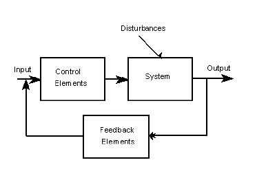
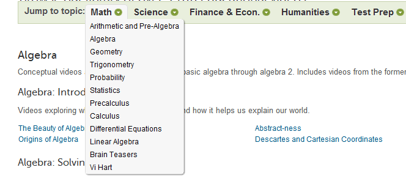

Learning is defined as a time when a sustained change in processing occurs, as an organism (human) interacts with a variety of situations. All learning systems operate through a variety of feedback loops between the user and the computer. An example of a feedback loop is illustrated in the diagram below.
The most critical part of these feedback loops can be found at the time when learning occurs. As it turns out, the most optimal time for learning to take place is when a user encounters an error. This may seem obvious, however, it is a concept many Learning Systems fail to utilize properly. An example of a site that capitalizes on the opportunity to correct their users and support the process of learning is Khan Academy.

Khan Academy teaches several subjects from arithmetic to calculus/differentials/statistics. It covers a couple of sciences such as biology, chemistry, physics and computer programming (just to name a few). This site works by prompting the user to first watch videos on the specific subject(s) they’re having trouble with. Following the video, they then take the quiz to see if they’ve completely grasped the fundamentals of the subject. The user is immediately returned the results of their quiz where they are then prompted to review concepts regarding the questions they’ve answered incorrectly by pressing a link, which will take them back to the specific video tutorial that they need.